finitely generated Module over a local ring and fibres of a vector space basis as generators
1. Proposition
Let  be a local ring with Residue field
be a local ring with Residue field
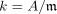
Suppose  is a finitely generated
is a finitely generated  -modules,
-modules,
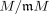
the vector space over (cf. functor from modules to vector spaces for the residue field).
Assume further that
(cf. functor from modules to vector spaces for the residue field).
Assume further that 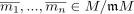
generate as module, and
module, and  are fibres of
are fibres of 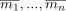
.
Then form a generating set
2. Proof
w.l.o.g. we may assume that
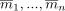
form a-basis
Let
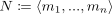
be the generated submodule . Then it remains to show that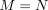
consider the sequence of modules
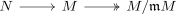
it follows especially that the composition
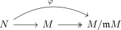
is surjective, as
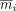
form a k-basis of and hence especially a generating set over
using the first isomorphism theorem for modules there exists a diagram
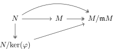
where
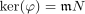
and hence an isomorphism
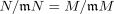
This shows
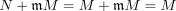
by second Nakaymas Lemma for Jacobson Radical we conclude that
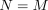